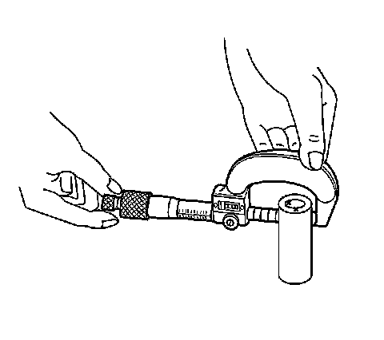
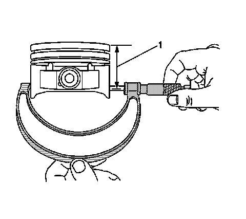
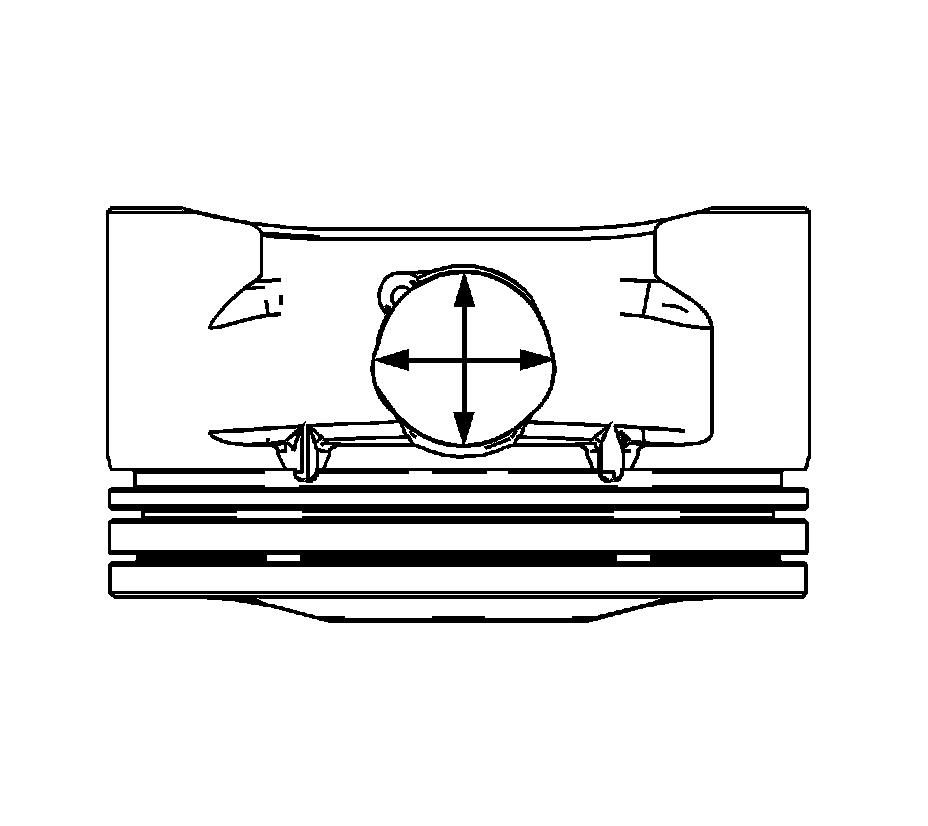
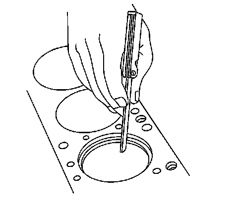
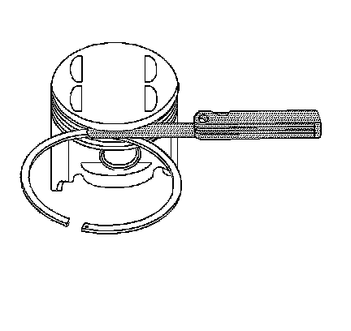
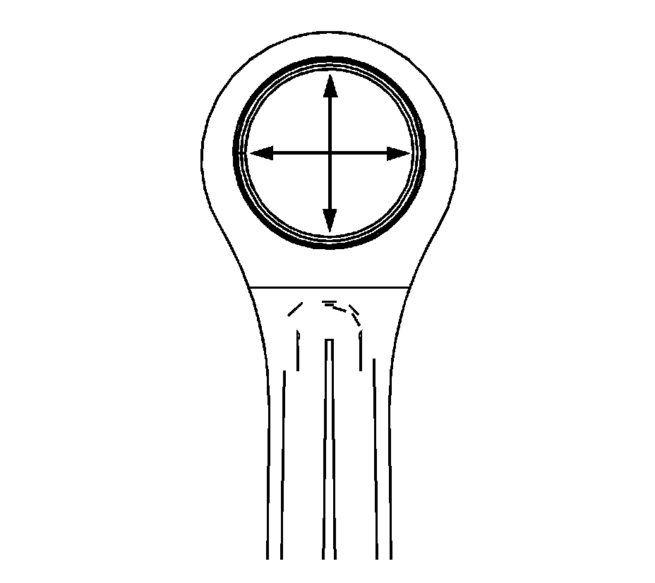
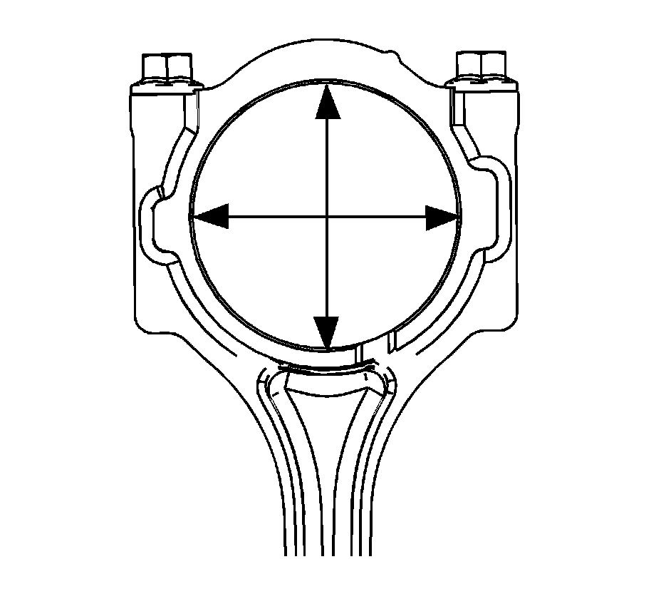

54. Piston, Connecting Rod, and Bearing Cleaning and Inspection
Piston, Connecting Rod, and Bearing Cleaning and Inspection
Piston Cleaning Procedure
Important: DO NOT wire brush any part of the piston.
1. Clean the piston and piston pin with solvent.
Caution: Refer to Safety Glasses Caution (Safety Glasses Warning) .
2. Clean the piston ring grooves with a groove cleaner. Ensure the oil ring holes and slots are clean.
3. Dry the piston and piston pin with compressed air.
Piston Inspection Procedure

1. Inspect the top of the piston (1) for erosion.
2. Inspect the ring lands and ring grooves (2) for cracks, warpage, wear and nicks/burrs that cause binding.
3. Inspect the piston skirt coating (3) for excessive wear.
4. Inspect the piston skirt (4) for cracks.
5. Inspect the piston pin bore (5) for wear, cracks and pin retainer grooves (6) for burrs.

6. Replace any piston and/or piston pin that have damage or excessive wear.
Piston Diameter Measurement Procedure

1. Using an outside micrometer, measure the width of the piston 40 mm (1.575 in) below the crown (top) of the piston at the thrust surface which is perpendicular to the centerline of the piston pin (1).
2. Compare the measurement to the diameter listed in the engine mechanical specifications.
3. You must replace the piston if any of its dimensions are out of specification. There are no oversized pistons available.
Piston Pin Bore Measurement Procedure
1. Piston pin bores and pins must be free of varnish or scuffing.
2. Use an outside micrometer to measure the piston pin in the piston contact areas.

3. Using an inside micrometer, measure the piston pin bore.
4. Subtract the measurement of the piston pin bore from the piston pin.
5. Compare the result with the engine mechanical specifications.
6. If the clearance is excessive, determine which piece is out of specification and replace as necessary.
Piston Ring End Gap Measurement Procedure

1. Place the piston ring in the area of the bore where the piston ring will travel, approximately 25 mm (1 in) down from the deck surface. Be sure the ring is square with the cylinder bore by positioning the ring with the piston head.
2. Measure the end gap of the piston ring with feeler gages. Compare the measurements with those provided in the engine mechanical specifications.
3. If the clearance exceeds the provided specifications, the piston rings must be replaced.
4. Repeat this procedure for all the piston rings.
Piston Ring Side Clearance Measurement Procedure

1. Roll the piston ring entirely around the piston ring groove. If any binding is caused by the ring groove, dress the groove with a fine file. If any binding is caused by a distorted piston ring, replace the ring.
2. With the piston ring on the piston, use feeler gages to check side clearance at multiple locations.
3. Compare your measurements with those found in the engine mechanical specifications.
4. If the clearance is greater than specifications, replace the piston rings.
5. If new piston rings do not bring the clearance within specification, the piston must be replaced.
6. When replacing the piston rings, only install re-ring sets that have a 1.2 mm (0.047 in) thick nitrided steel upper compression ring and multi-piece oil rings. The top compression ring may be installed with either side up. There is a locating dimple on the 2nd compression ring near the end for identification of the top side. Install the 2nd compression ring with the dimple facing up.
Connecting Rod Cleaning Procedure
1. Clean the connecting rods in solvent.
Caution: Refer to Safety Glasses Caution (Safety Glasses Warning) .
2. Dry the connecting rods with compressed air.
Connecting Rod Visual Inspection Procedure

1. Inspect the piston pin bushing (4) for scoring or damage.
2. Inspect the connecting rod beam (1) for twisting or bending.
3. Inspect the rod cap (2) for any nicks or damage caused by possible interference.
4. Inspect for scratches or abrasion on the rod bearing seating surface.
Important: DO NOT scrape the rod or rod cap.
5. If the connecting rod bores contain minor scratches or abrasions, clean the bores in a circular direction with a light emery paper.
Connecting Rod Measurement Procedure
Piston Pin End
Important: Measurements of all components should be taken with the components at normal room temperature.
1. Using an outside micrometer, take 2 measurements of the piston pin in the area of the connecting rod contact.

2. Using an inside micrometer, measure the connecting rod piston pin bore.
3. Subtract the piston pin diameter from the piston pin bore.
4. Compare the clearance measurements with the Engine Mechanical Specifications (Specifications) .
5. If the clearance is excessive, replace the piston pin. If a new pin does not resolve the clearance problem, replace the connecting rod.
Connecting Rod Crankshaft Bearing End

Important: Measurements of all components should be taken with the components at normal room temperature.
1. Using an inside micrometer, measure the connecting rod crankshaft bearing bore.
2. Compare the bore measurements with the Engine Mechanical Specifications (Specifications) .
3. Replace the connecting rod if the bore is out of specifications. DO NOT recondition the connecting rod.